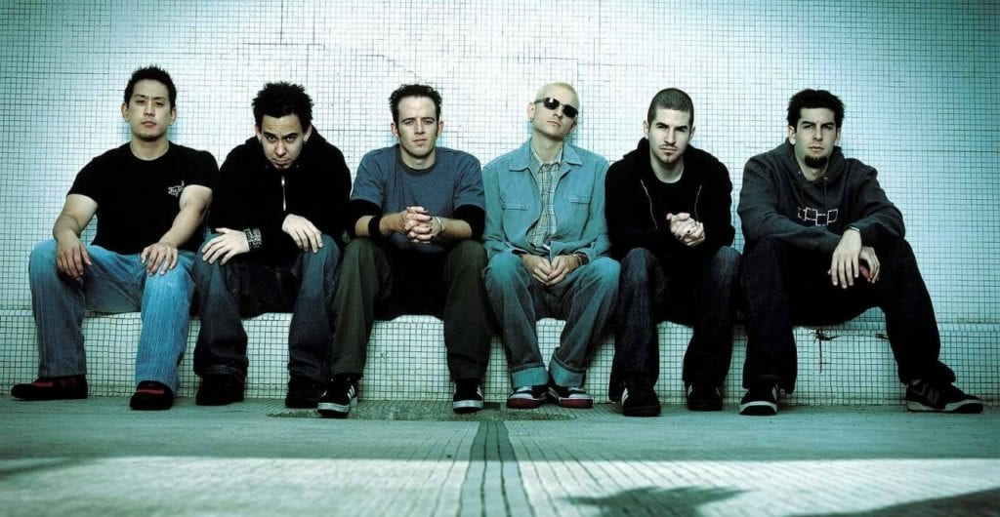

Los inicios

Todo comenzó en 1996 en Agoura Hills, California. Un grupo de amigos de preparatoria formaron una banda llamada Xero. Los fundadores fueron Mike Shinoda, Brad Delson, Rob Bourdon y Joe Hahn.
Más tarde se unió el vocalista Chester Bennington en 1999, y la banda cambió su nombre primero a Hybrid Theory y luego al nombre definitivo: Linkin Park.
El éxito mundial
En el año 2000 lanzaron su álbum debut Hybrid Theory, que se convirtió en el álbum debut más vendido del siglo XXI con más de 27 millones de copias. Canciones como "In the End" y "Crawling" se volvieron himnos generacionales.
En 2003 lanzaron Meteora, confirmando su lugar como una de las bandas más importantes del mundo con temas como "Numb" y "Breaking the Habit".
Cronología
| Año | Evento |
|---|---|
| 1996 | Se forma la banda con el nombre Xero |
| 1999 | Chester Bennington se une como vocalista |
| 2000 | Lanzan Hybrid Theory, su álbum debut |
| 2001 | Ganan su primer Grammy por "Crawling" |
| 2003 | Lanzan Meteora con "Numb" y "Somewhere I Belong" |
| 2007 | Lanzan Minutes to Midnight, cambiando un poco su estilo |
| 2017 | Fallece Chester Bennington el 20 de julio |
| 2024 | La banda regresa con Emily Armstrong como vocalista |
La tragedia

El 20 de julio de 2017, el vocalista Chester Bennington falleció a los 41 años. Su muerte afectó profundamente a millones de fanáticos en todo el mundo. La banda entró en un período de pausa y silencio.
En 2024, Linkin Park anunció su regreso con la vocalista Emily Armstrong y lanzaron el álbum From Zero, comenzando una nueva etapa en su historia.